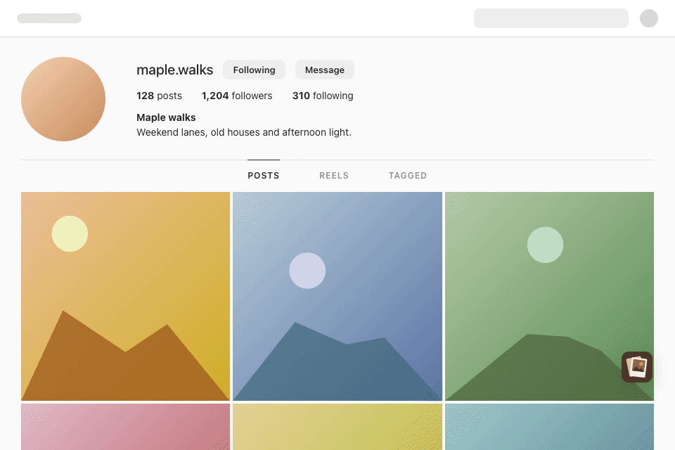
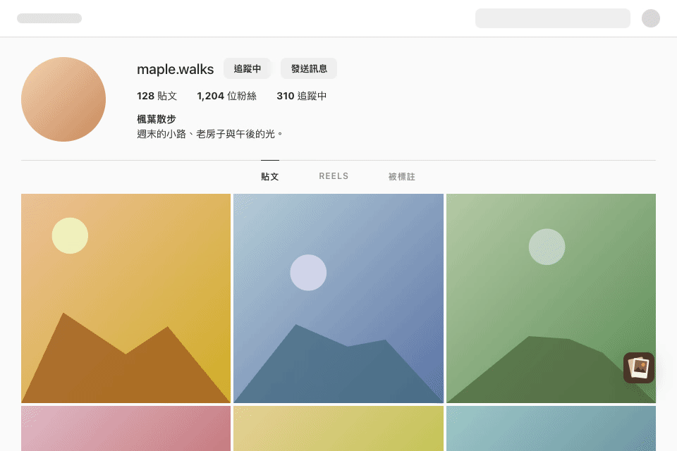
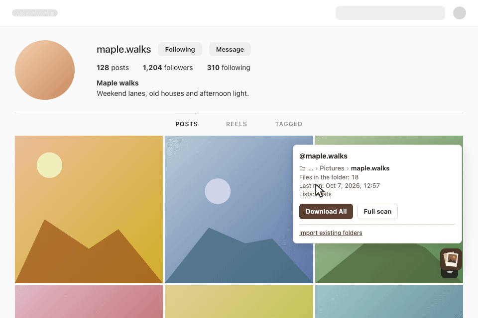
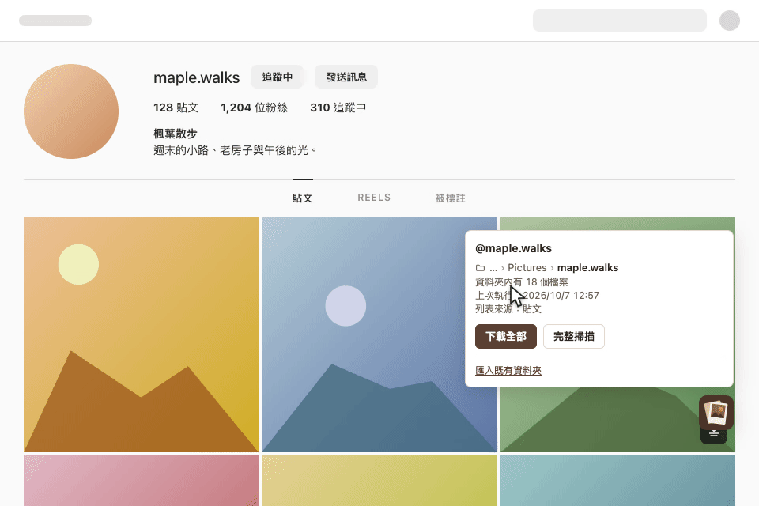
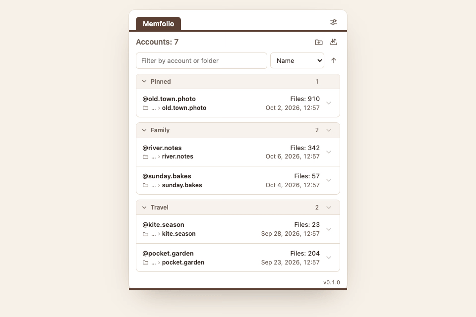
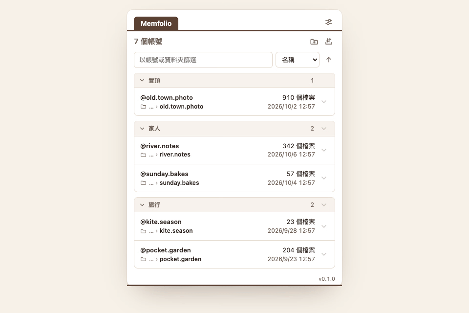

Free · Open source · Chrome · Edge · Firefox免費 · 開放原始碼 · Chrome · Edge · Firefox
Feeds move on.
Memories stay.
動態會過去，
回憶留下來
A browser extension that saves an account's photos and videos into one folder per account, and skips every file the folder already has. Works on Instagram. 瀏覽器擴充功能：把帳號的相片與影片存進電腦的資料夾，每個帳號一個資料夾，資料夾裡已有的檔案不再下載。適用於 Instagram。
Chrome, Edge or another Chromium browser 111+ · Firefox 128+ · sends nothing, loads no remote code
The Firefox build has no folder management, a limit of the browser: see Firefox.
Chrome、Edge 或其他 Chromium 瀏覽器 111 版以上 · Firefox 128 版以上 · 不傳送任何資料、不載入遠端程式碼
Firefox 版沒有資料夾管理，這是瀏覽器的限制，見 Firefox。






What it does功能
Nothing downloaded twice已有的不再下載
A file counts as present when a file with the same media id is in the account's folder right now. There is no download history that could drift away from the disk. 資料夾裡現在有同一個媒體 id 的檔案，就算已下載。沒有另外的下載紀錄，所以不會和磁碟上的內容不一致。
One folder per account每個帳號一個資料夾
The account is identified by its numeric id, so a changed username keeps its folder. A new account gets a folder inside the default location you choose once; existing folders can be imported to rebuild the list. 帳號以數字 id 識別，改名後仍用原本的資料夾。新帳號會在你選過一次的預設位置裡建立資料夾；既有的資料夾可以匯入，重建清單。
Download All, incrementally下載全部，只補缺的
On a profile page, for the tab you are viewing: posts, Reels, tagged. A run stops listing at the first page that is already on disk; a full scan lists every page. A run can be cancelled. 在個人檔案頁，依目前的分頁下載：貼文、Reels、被標註。一般執行列到第一個已全部存在的頁面就停止；完整掃描會列出每一頁。執行中可以取消。
Single downloads單項下載
A post, one picture of a carousel, a thumbnail, a reel, stories and highlights, with a button under the pointer or the hotkey Ctrl/Cmd + Shift + D. They go to the browser's download folder, or to the account folder when you choose so.
一則貼文、輪播中的一張、縮圖、Reel、限時動態與精選：指標下的按鈕，或快捷鍵 Ctrl/Cmd + Shift + D。存到瀏覽器的下載資料夾，也可以設定存到帳號資料夾。
The list in the toolbar工具列的帳號清單
Groups, pinning, sorting and a manual order set by dragging. Paste profile addresses to add accounts without contacting the site; export the list as text and paste it back later. 群組、置頂、排序與拖拉決定的手動順序。貼上個人頁網址就能加入帳號，過程不會連線到網站；清單可匯出成文字，之後再貼回。
Nothing leaves your computer資料留在你的電腦
No analytics, no error reports, no remote code. The extension runs on www.instagram.com only and asks for the storage permission; the Firefox build also needs downloads.
不傳送分析資料或錯誤回報，不載入遠端程式碼。只在 www.instagram.com 執行，只要求 storage 權限；Firefox 版另需 downloads。
Firefox
Firefox gives an extension no access to folders on the disk. This is a limit of the browser, and the Firefox build works within it: single items and whole accounts can be downloaded, and managing the files is left to you. Firefox 不讓擴充功能存取磁碟上的資料夾。這是瀏覽器的限制，Firefox 版在這個限制內運作：可以下載單一項目與整個帳號，檔案的管理由你自行處理。
- Files are saved inside the browser's download folder, as
Memfolio/<username>/. The nameMemfoliocan be changed in the settings. 檔案存在瀏覽器的下載資料夾內：Memfolio/<username>/。Memfolio這個名稱可在設定中修改。 - Before each Download All you choose the account's folder; the file names seen then decide what is already there. Download everything skips the check instead. 每次下載全部之前請你選擇該帳號的資料夾，當時看到的檔名決定哪些已經存在。全部下載則不做檢查。
- Not available: importing existing folders, choosing another folder for an account, and the folder check. 不提供：匯入既有資料夾、為帳號選擇其他資料夾、檢查資料夾。
Install安裝
Chrome
- Open the Chrome Web Store page 開啟 Chrome Web Store 頁面
- Choose Add to Chrome 選 加到 Chrome
- Open a profile page on instagram.com; the button at the bottom right opens the panel 開啟 instagram.com 的個人檔案頁，右下角的按鈕會展開面板
Edge
- Open the Edge Add-ons page 開啟 Edge Add-ons 頁面
- Choose Get 選 取得
- Open a profile page on instagram.com; the button at the bottom right opens the panel 開啟 instagram.com 的個人檔案頁，右下角的按鈕會展開面板
Firefox
- Open the Firefox Add-ons page 開啟 Firefox Add-ons 頁面
- Choose Add to Firefox 選 新增至 Firefox
- Open a profile page on instagram.com; before each Download All, choose the account's folder (see Firefox) 開啟 instagram.com 的個人檔案頁；每次下載全部前選擇帳號資料夾（見 Firefox）
Without a store: download the packaged build from GitHub releases. Chrome or Edge: unpack the zip and load it from chrome://extensions (Developer mode, Load unpacked). Firefox: open the .xpi file in Firefox and confirm the installation; it is signed by Mozilla. 不經商店：從 GitHub releases 下載封裝好的建置。Chrome 或 Edge：解壓後在 chrome://extensions（開發人員模式、載入未封裝項目）載入。Firefox：在 Firefox 中開啟 .xpi 檔並確認安裝，檔案已由 Mozilla 簽署。